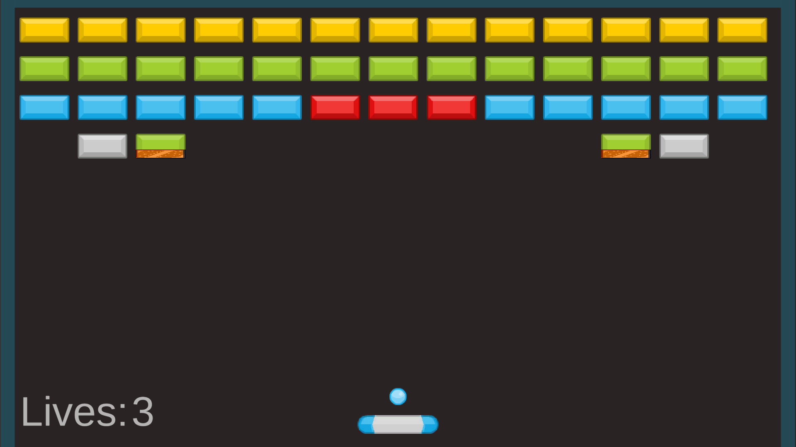
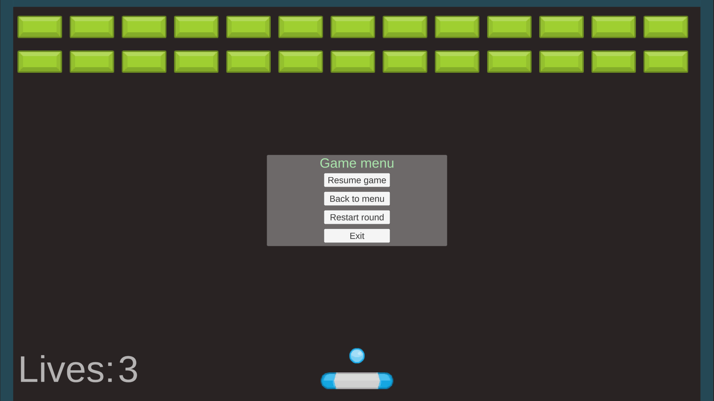
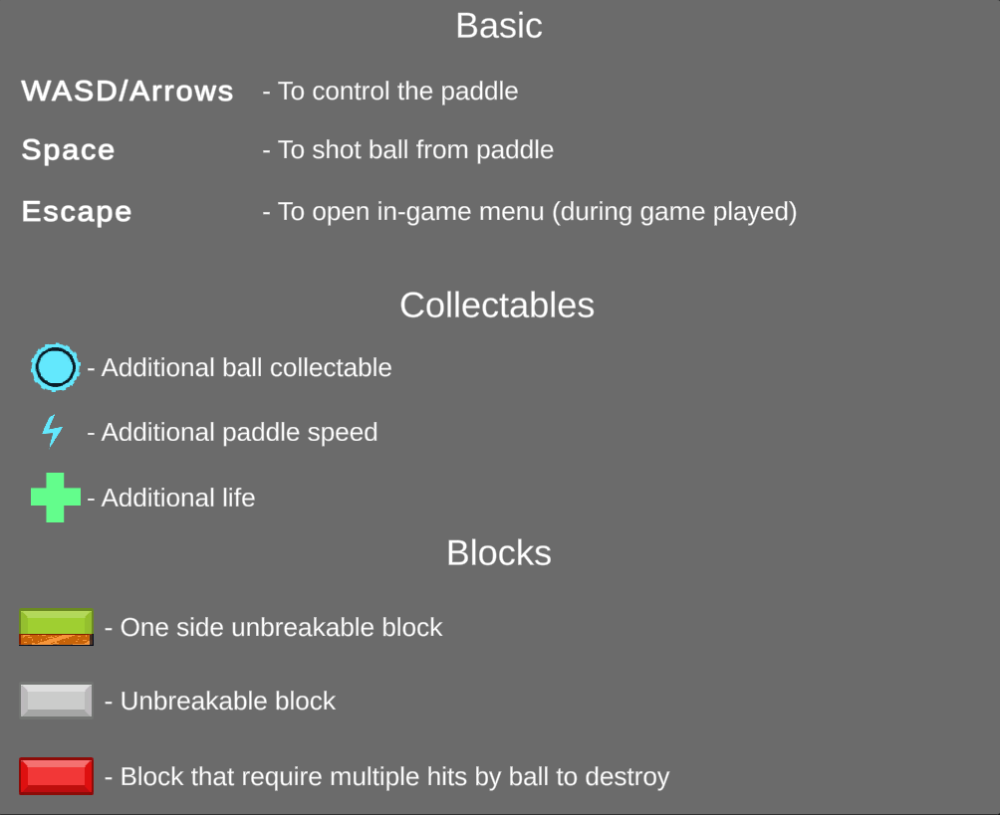

About arkanoid project
Source code and more details available on Bitbucket project
Small arkanoid techo demo written on C#. Used flexible architecture (Based on state-machine & services system with zenject); In game you can find collectables and couple of different block types
Features
- Flexible architecture (Based on state-machine & services system with zenject)
- Levels system
- Possibility to win/lose game or fully complete game
- In-game menu and async popups
- Game restart available
In-Game features
- Levels to play
- Game tutorial
- Game restart available
- Different collectables
- Different blocks types
Patterns inside
- Factory
- Command
- State (state machine)
- Async mechanism
Screenshots



